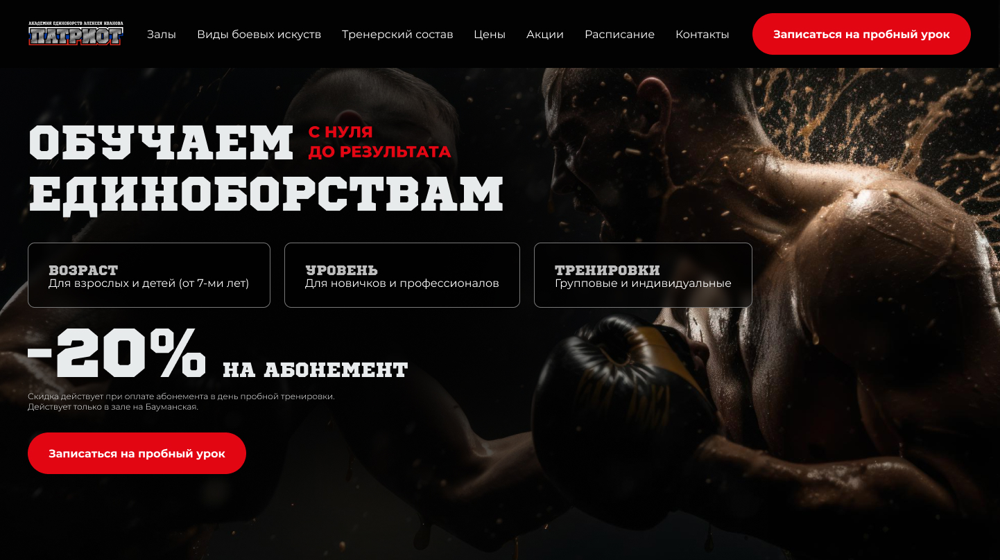
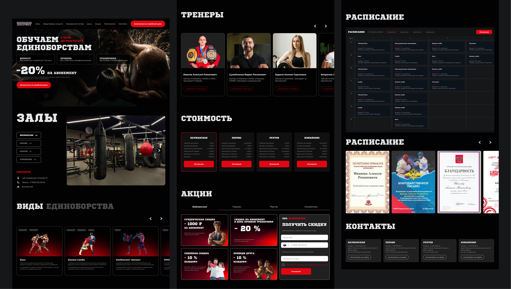
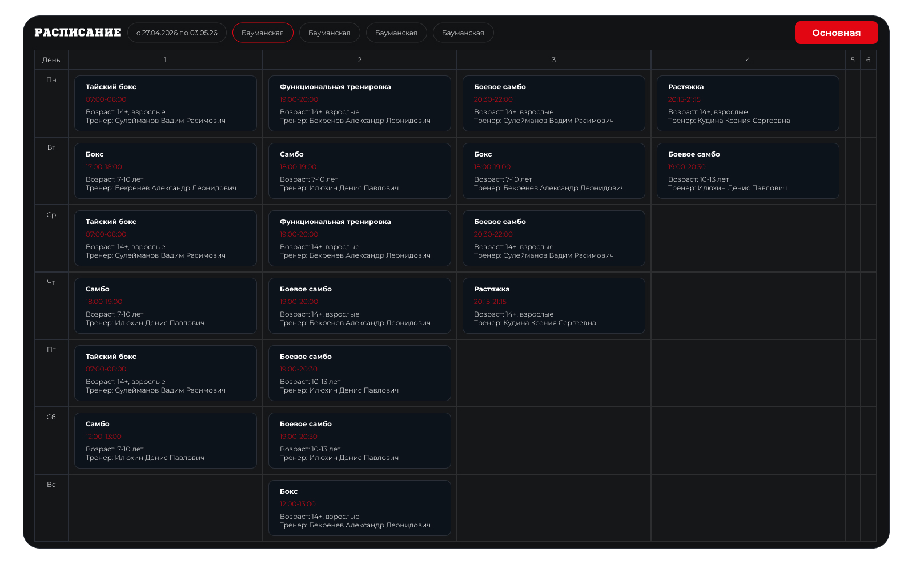
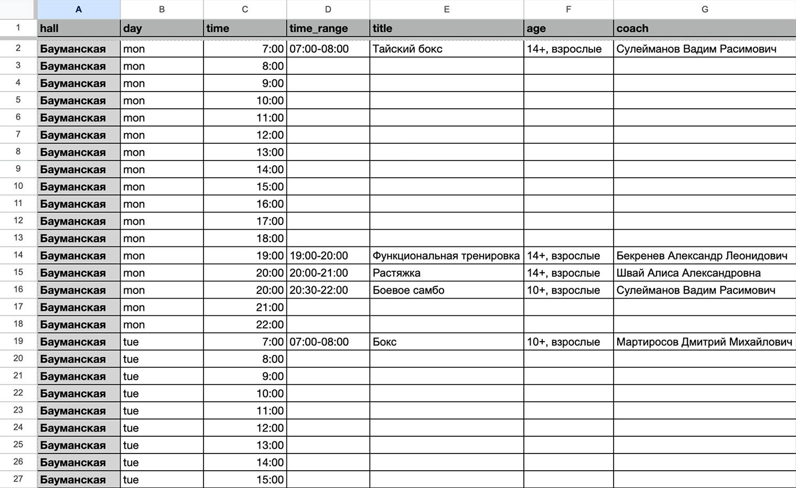

← Назад в портфолио
Кейс лендинга · спорт · единоборства
Лендинг для клуба единоборств Patriot Gym
Сайт под ключ для спортивного проекта: упаковка оффера, структура, UX/UI-дизайн, адаптивная версия и понятный путь к заявке на тренировку.

Задача проекта
Сделать лендинг, который быстро объясняет ценность клуба и ведёт к заявке
Patriot Gym нужен был не просто красивый сайт, а посадочная страница для понятного первого контакта с будущим клиентом. Человек заходит на лендинг, видит направление, атмосферу, тренеров, преимущества клуба и быстро понимает, подходит ли ему первая тренировка.
Страница собрана вокруг коммерческой задачи: показать сильный образ клуба, убрать сомнения у новичков и привести пользователя к действию без перегруза лишней информацией.
Структура лендинга
Блоки выстроены как путь от интереса к заявке
Для лендинга важно не просто разместить информацию, а провести пользователя по логике принятия решения: что это за клуб, кому подходит, почему стоит прийти и как записаться.
Первый экран
Короткое позиционирование, сильный визуал, понятный призыв к записи и быстрые преимущества.
Направления тренировок
Разделы для единоборств, физической подготовки и тренировок для разных уровней.
Для кого клуб
Отдельно закрываются сценарии новичков, детей, взрослых и тех, кто уже занимался спортом.
Тренеры и доверие
Экспертность тренерского состава помогает снизить тревогу перед первой тренировкой.
Атмосфера и зал
Фотографии, детали пространства и визуальная подача показывают реальный характер клуба.
Заявка
Форма расположена в логичных местах страницы, чтобы пользователь мог оставить контакт без лишних шагов.

Расписание на сайте
Расписание тренировок можно обновлять без программиста
Для Patriot Gym предусмотрен блок расписания, который связан с таблицей. Администратор клуба может самостоятельно менять время занятий, направления и тренеров — после обновления таблицы информация на сайте остаётся актуальной без обращения к разработчику.
Такой подход удобен для спортивных проектов: расписание часто меняется, а сайт должен быстро показывать клиенту свежую информацию перед записью на тренировку.


UX и коммерческая логика
На странице нет случайных блоков — каждый работает на доверие или заявку
Понятный первый экран
Пользователь сразу считывает, что это клуб единоборств, видит сильную подачу и понимает следующий шаг.
Снятие страха у новичков
В тексте и структуре учтён барьер: многие хотят прийти, но боятся, что будет слишком сложно или не для них.
Быстрая навигация по смыслам
Разделы не перегружают пользователя и помогают быстро найти нужную информацию: направления, тренеры, зал, условия.
Повторяющиеся точки заявки
Призыв к действию появляется после ключевых аргументов, чтобы пользователь мог отправить заявку в момент готовности.
Аналитика и формы
На сайте подключены формы заявок и аналитика целевых действий
Для лендинга важно не только выглядеть убедительно, но и понимать, как он работает после запуска. В проекте предусмотрены формы заявок и аналитика: можно отслеживать обращения, клики по кнопкам, источники трафика и поведение пользователей на странице.
Количество обращений через формы и динамика по периодам.
Доля пользователей, которые дошли до отправки заявки.
Каналы, из которых приходят посетители и потенциальные клиенты.
Клики по кнопкам, переходы к форме и другие важные события.
Изображение 05 · 16:9
Скрин аналитики
Здесь нужен скрин Метрики: цели, заявки, конверсия, источники или рост обращений
Визуальная концепция
Сильный спортивный стиль без визуального шума
Для проекта выбран энергичный визуальный язык: контрастный фон, крупная типографика, акцентные элементы и динамичная подача. Такой стиль поддерживает образ клуба единоборств и помогает лендингу выглядеть уверенно, собранно и современно.
Дизайн не спорит с содержанием: визуальные акценты помогают выделить важные блоки, а не отвлекают от записи на тренировку.
Изображение 06
Детали дизайна
Цвета, типографика, UI-блоки
Адаптивная версия
Мобильная версия сделана как отдельный сценарий, а не просто уменьшенный десктоп
Для лендинга спортивного клуба мобильная версия особенно важна: часть аудитории переходит с рекламы, соцсетей или мессенджеров. Поэтому блоки должны быстро читаться, кнопки должны быть заметными, а форма заявки — доступной.


SEO-структура
Страница кейса собрана так, чтобы работать и на доверие, и на поиск
В кейсе использована понятная иерархия заголовков: один H1, логичные H2 и H3, текстовые блоки с естественными ключами про разработку лендинга, дизайн сайта под ключ, UX/UI и сайт для спортивного клуба.
Такая структура помогает странице быть читабельной для человека и понятной для поисковых систем: кто сделал проект, для какой ниши, какие задачи решались и какой результат получил клиент.
Что вошло в работу
Лендинг разработан под ключ
Нужен лендинг под ключ?
Соберу страницу, которая выглядит профессионально и помогает продавать
Если вам нужен лендинг для услуги, клуба, события, школы, студии или digital-продукта — можно сделать страницу с понятной структурой, сильным дизайном и логикой заявки.
Обсудить лендинг